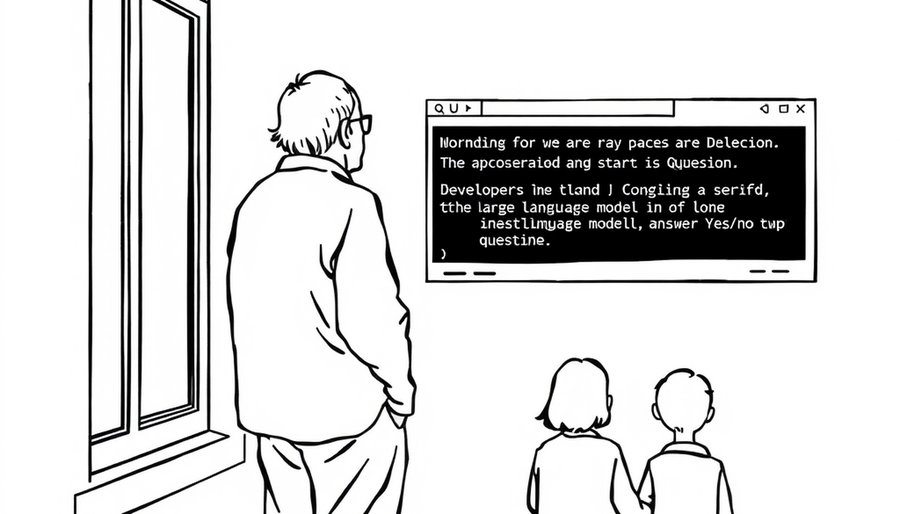

汽车工业诞生初期，没人知道“汽车”应该长什么样。最自然的做法是把马车车厢直接搬过来，去掉马，装上发动机。高耸的车厢、马车座椅、悬挂软垫，一切照旧。直到几十年后，汽车才长出低重心、流线型、独立悬挂——那是它自己的形状。
今天的AI Agent正活在同一个阶段。一个“这条Shell命令是否危险”的布尔问题，要驱动千亿参数模型生成几百个token的推理文本。为了让程序能解析，开发者还要上受限解码、结构化输出——输出格式本身成了昂贵的补丁。Agent重构代码时卡住几十秒，只为等它回答一个本可以一秒搞定的离散命题。这不是某个产品的缺陷，而是整个范式的错位。
表面解释很简单：主流模型是为“服务人类”设计的，不是为“服务软件”设计的。人类对齐训练（RLHF）让模型输出符合人类阅读习惯的表达，但GPT-4技术报告显示，RLHF后期望校准误差（ECE）从预训练的0.007恶化到0.074。模型越来越会说话，越来越不能如实报告自己的把握。而软件系统需要的不是表达，是能写进if分支的概率值：if (noul > 0.8) { execute() }。概率必须严格校准——报0.85，长期就该真对85%。
TypeSafe创始人Diogo Almeida的诊断一针见血：“AI一直做‘人类助手’，从没做过‘软件零部件’。”他此前是OpenAI核心研究员，InstructGPT论文共同作者——ChatGPT对话能力的奠基者之一。他的问题是：对话模型多年前就超人水准了，为什么软件全自动化始终落不了地？答案就藏在那个“人形车厢”里。
2026年9月15日，TypeSafe AI发布模型Jev。它放弃文本生成，不返回任何自然语言字符串。输入只有State（任意状态：文本、JSON、运行时上下文）和Questions（型化提问），输出为经过统计校准的概率化离散决策。所有判断需求被归纳为三种原语：Choice（从最多255个候选中择一，返回全候选概率分布与置信度）、Score（2-10级有序阶梯打分）、Noul（命题真/假，返回0-1实数）。
单次判断70-500毫秒，输入每百万Token收0.042美元，输出免费。多个提问共享同一State，并行计算——提问数从1加到12，端到端延迟仅从0.35秒微增至0.39秒，因为最耗时的状态编码只需执行一次。TypeSafe公布的实测（四种企业工作流：发票、客服路由、合规审计）：决策精度与GPT-5.6 Terra持平（67.8% vs 67.9%），延迟快约25倍，成本低约76倍，结构化输出格式错误率0.00%（Claude Opus 5为5.73%）。
社区演示同样惊人：10Hz实时控制DOOM游戏，单小时成本约7美元；用Jev替代LLM节点做跨网页机票搜索，7秒完成、成本0.0039美元；7美分巡检1000个GitHub PR的14项合规指标。
Jev能做到这一点，不是因为参数更多，而是因为训练目标彻底不同。传统RLHF奖励的是“人类觉得好的回答”，而TypeSafe用新范式RLCD（概率校准强化学习），把“预测概率与长期实测频率的一致”作为奖励函数中心。模型不再学怎么说得漂亮，而是学怎么如实报告自己的把握。这让置信度成为工程师敢依赖的量化指标。公司文化墙上印着两句话：Build Prod, Not God 和 Death before strings。前者说，造的是产品零件，不是全知的神；后者说，宁可死也不输出字符串。这不是对语言的敌意，而是对智能形态的重新理解：判断不需要解释，路由不需要抒情，安全闸门不需要道歉。
Jev的命名致敬经济学家杰文斯（Jevons）。杰文斯悖论指出：资源效率大幅提高、使用成本大跌，总消耗不降反升，因为全新场景爆发。TypeSafe要做的正是把单次智能决策成本压低两个数量级，让原本因昂贵缓慢而不敢用AI的if-else、实时路由、安全闸门全部被知能填满。
这是一个社会级别的转变。电刚发明时，只是油灯的替代品——在原有照明位置拉根电线，装个灯泡。但电的真正力量在于它催生了整个电气化骨架：电动机、电网、电子器件、计算机。电不再是“替代”旧能源，而是长成了基础设施本身。AI正在走同一条路：从“替代人类判断”到“成为软件骨架”。
Jev把卡尼曼双系统理论显式搬进软件架构：系统二（慢、深、长链推理——GPT-5、Claude Opus、o1）只处理开放式生成和低置信度歧义；系统一（快、直觉、无需语言中介——Jev）承包毫秒级离散判断；中间是传统确定性代码。动静分工后，Agent的昂贵循环被拆解：意图分流与危险校验交给系统一，简单任务直接由本地代码执行，只有深层重构才唤醒系统二。
这并不意味着大模型会被取代。相反，Jev的边界很清楚：它不能写诗，不能解释“为什么”，不能处理需要多步推理的开放问题。但在那些原本被大模型“大材小用”的场景里——安全校验、意图分类、格式合规、实时路由——Jev用更低的成本、更快的速度、更可靠的格式，把系统二解放出来去做它真正擅长的事。代价是失去自然语言的可解释性，但在工程现场，一个校准过的概率分布比一段流畅的解释更值得信任。
回到开头那个画面。某天，一个系统在毫秒间挡下一个危险命令。背后没有一个“思考中的大脑”，没有文字解释，只有一组校准过的概率值，写进了一个if语句。用户甚至不知道AI曾经在场。
这正是机器原生智能的形状。它不再模仿人类交互的躯壳，不再用语言包装自己，而是像电流一样，安静地流淌在每一个执行细节里。判断一旦比说话便宜，智能就不再是“助手”，而开始向整个软件栈扩散——这是杰文斯悖论的社会版本：当决策便宜到能嵌进每个loop，它不是用得少了，而是无处不在。
TypeSafe的Jev只是这条路上的一个坐标。但它让我们看清了一个事实：我们过去对“智能”的想象，太像对“汽车”的早期想象——它必须长得像我们熟悉的东西。无马马车阶段终将过去，不是因为技术不够好，而是因为旧结构被拆掉，新结构长出来。
那时，我们可能不再问“AI在哪里”，而是问：“这里为什么还没有智能？”
尾声
Jev的精度持平数据来自四种特定企业工作流，不代表所有任务类型。RLCD的长期校准可靠性还需更多场景验证，但至少在这些材料中，它提供了一种走出“无马马车”阶段的可行路径。杰文斯悖论在AI领域的展开刚刚开始——当判断的价格从对话降到查表，我们可能低估了有多少“不值得用AI”的角落，正在等待被知能填满。
小汪老师的成长观察笔记